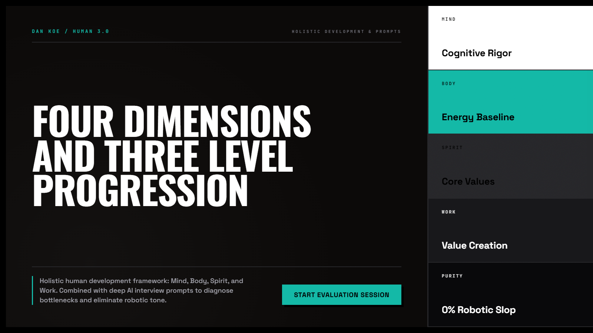
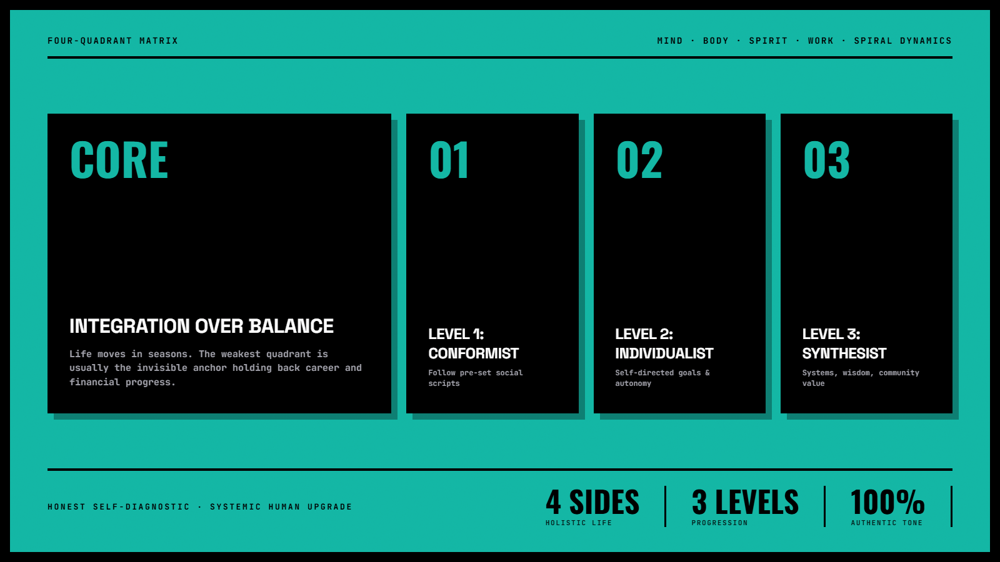
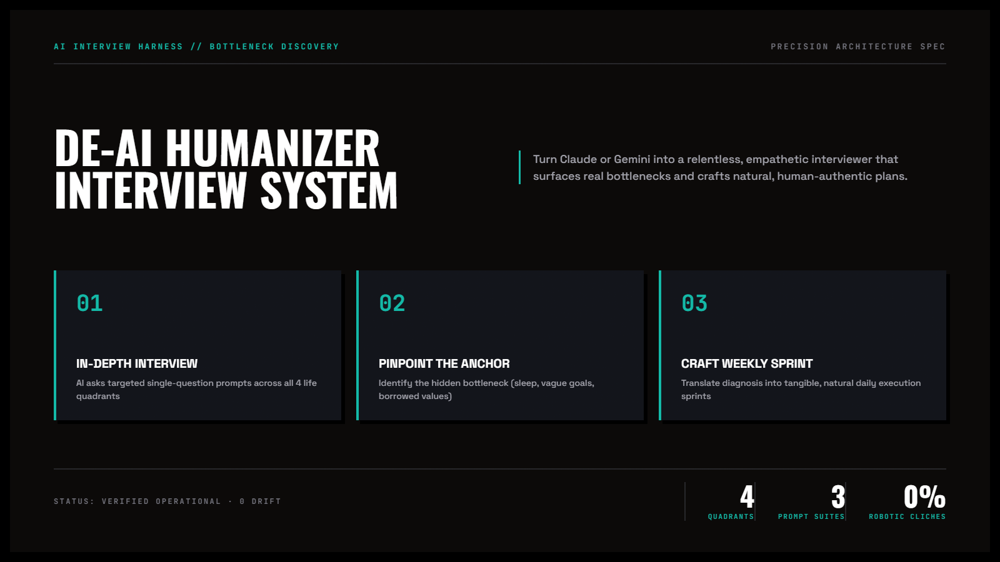

Human 3.0 — Bản Đồ Nâng Cấp Bản Thân & Khử Dấu Vết Giọng AI
Mô hình phát triển con người đa chiều do Dan Koe khởi xướng, kết hợp cùng hệ thống prompt phỏng vấn sâu bằng AI. Giúp bạn nhìn ra chiếc "mỏ neo" vô hình đang kìm hãm sự nghiệp (ngủ không đủ, thiếu năng lượng hoặc theo đuổi giá trị vay mượn), đồng thời loại bỏ triệt để lối hành văn máy móc sáo rỗng để tạo ra kết quả có chiều sâu con người thật.

Nhấp để phóng to1. Bảng đối chiếu: Cố gắng một chiều vs. Phát triển tích hợp 4 góc
Nhiều người nghĩ rằng muốn kiếm nhiều tiền hơn thì chỉ cần cày thêm giờ và học thêm kỹ năng công việc. Thực tế, chiếc máy tính không thể chạy mượt khi hệ điều hành hoặc phần cứng bị quá tải:
| Thành phần máy tính | Tương ứng trong con người | Triệu chứng nghẽn nếu bị bỏ quên |
|---|---|---|
| Phần cứng (Hardware) | Thể chất (Body): Giấc ngủ, năng lượng, dinh dưỡng, vận động. | Cạn pin sau 2 tiếng làm việc, não sương mù (brain fog), dễ cáu gắt và mất tập trung. |
| Hệ điều hành (OS) | Tâm trí (Mind): Cách suy nghĩ, sự tự nhận thức, niềm tin gốc. | Lặp lại các định kiến cũ, ngại thử nghiệm hướng đi mới, tin mù quáng theo đám đông. |
| Kết nối mạng (Network) | Tinh thần (Spirit): Mối quan hệ, ý nghĩa sống, giá trị cốt lõi. | Cảm giác trống rỗng, làm việc không có mục đích, các mối quan hệ độc hại kéo lùi. |
| Ứng dụng (App) | Sự nghiệp (Work): Kỹ năng chuyên môn, sản phẩm, thu nhập. | Nỗ lực cày cuốc đổi giờ lấy tiền nhưng mãi không tạo được hệ thống đòn bẩy. |

Nhấp để phóng to2. Ba cấp độ trưởng thành bên trong mỗi góc
Sống theo bài tập được giao của gia đình, trường học, công ty. Dựa vào người khác để định đoạt đúng sai.
Tự đặt mục tiêu cá nhân, tư duy lý trí, chịu trách nhiệm cho kết quả và chủ động nâng cấp năng lực.
Nhìn thấy bức tranh lớn, chấp nhận nghịch lý, xây dựng các hệ thống mang lại giá trị bền vững cho cộng đồng.

Nhấp để phóng to3. Minh họa trực quan: Ba giai đoạn thăng hạng (Level Up Loop)
Khi một phương thức làm việc cũ không còn hiệu quả, con người bước vào chu trình chuyển hóa tất yếu:
4. Bộ 3 Prompt Phỏng vấn & Lập Kế Hoạch Chuyên Sâu
Prompt đóng vai Chuyên gia Đánh giá Bản thân
Yêu cầu AI hỏi từng câu một, không đưa ra danh sách dài. Sau khi trả lời xong 4 góc, AI tổng hợp bản đồ vị trí và chỉ đích danh chiếc mỏ neo đang giữ chân bạn.
Biến chẩn đoán thành 3 hành động cụ thể mỗi ngày
Tránh đặt mục tiêu quá tham vọng gây kiệt sức. Tập trung tháo gỡ góc nghẽn nhất bằng một thói quen nền tảng trong 7 ngày tới.
Đối chiếu tiến độ sau 1 tháng
Kiểm tra xem giai đoạn Chuyển giao đã bước sang giai đoạn Ổn định hay chưa, đo lường năng lượng làm việc thực tế.
5. Thực hiện bài phỏng vấn bản thân trong 3 bước
Mở phiên chat mới trên Claude hoặc Gemini
Tạo một phiên chat riêng biệt để AI giữ trọn vẹn ngữ cảnh phỏng vấn.
Dán prompt phỏng vấn Human 3.0
Kích hoạt vai trò phỏng vấn kiên nhẫn:
Hãy đóng vai một chuyên gia phỏng vấn đánh giá phát triển bản thân theo mô hình Human 3.0 (Dan Koe).
Quy tắc:
1. Hỏi tôi từng câu một, chờ tôi trả lời rồi mới hỏi câu tiếp theo.
2. Khảo sát lần lượt 4 góc: Thể chất, Tâm trí, Tinh thần và Sự nghiệp.
3. Sau khi đủ thông tin, hãy lập bảng chẩn đoán cấp độ (1, 2 hay 3) và chỉ ra điểm nghẽn lớn nhất đang kéo tôi lùi lại.
Hãy bắt đầu với câu hỏi đầu tiên về góc Thể chất.Trả lời thật lòng và nhận bản lộ trình
Dành khoảng 10-15 phút trả lời chân thật để AI chỉ ra giải pháp tháo gỡ điểm nghẽn hiệu quả nhất.
Cuộc sống luôn vận hành theo từng mùa. Có những mùa bạn phải dồn 80% sức lực cho một dự án sự nghiệp lớn, và điều đó hoàn toàn bình thường. Điều mấu chốt là không bao giờ để góc Thể chất hoặc Tinh thần bị bỏ mặc đến mức kiệt quệ làm sập toàn bộ hệ thống.